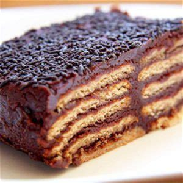

Chocolate Marquise

Description
Tasteful dessert made of Marie cookies and chocolate ganache to share with the fam. No need of baking and easily made. The iced cake made to please!
Ingredients
- 2 packages of classic Marie cookies
- 1/4 liter of milk
- 2 tablets of milk chocolate
- 1 egg yolk
- 1 can of condensed milk
- A medium sized container
Steps
- Boil water on a litle pot.
- Put a bigger pot over the boiling one and add the chocolate on pieces until it melts.
- Turn off the stove and mix the condensed milk and the egg yolk with the chocolate.
- Wait until the chocolate is room temperature, and pour the milk on a different container.
- Pour a first layer of chocolate on the marquise container.
- Dip the marie cookies on milk until they are soft but don`t break.
- Create a layer of cookies over the other layer.
- Repeat the layering of chocolate and cookies.
- Save some melted chocolate for the top layer of the dessert.
- Keep on the fridge until the dessert gets less liquid.